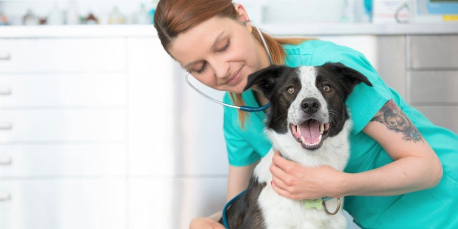

Consejos y Recomendaciones
Conocer cómo prevenir enfermedades en tus animales es fundamental para garantizar su bienestar, mantenerlos saludables y felices.
¿Cómo prevenir enfermedades en Perritos?
- Alimentación adecuada
- Ejercicio diario
- Chequeos veterinarios regulares
- Higiene y limpieza
- Socialización con otros perros y personas

¿Cómo prevenir enfermedades en Gatitos?
- Proporcionar juguetes estimulantes
- Ofrecer rascadores
- Chequeos veterinarios regulares
- Alimentación balanceada

¿Cómo prevenir enfermedades en Conejos?
- Socialización: Interactuar con ellos para fomentar un comportamiento amigable y reducir el estrés.
- Ambiente seguro: Espacio libre de peligros y con refugios adecuados.
- Chequeos veterinarios: Visitas regulares para vacunación y control.
- Ejercicio: Espacio para saltar y explorar.
- Dieta rica en fibra: Heno fresco, verduras y pellets.

¿Cómo prevenir enfermedades en Loros?
- Dieta variada: semillas, frutas, verduras y pellets.
- Enriquecimiento ambiental: juguetes y actividades mentales.
- Socialización: pasar tiempo con ellos para reducir el estrés.
- Chequeos veterinarios: revisiones regulares.

¿Cómo prevenir enfermedades en Gallinas?
- Protección contra depredadores.
- Chequeos de salud regulares.
- Higiene del gallinero.
- Espacio adecuado para moverse y anidar.
- Alimentación balanceada: granos, verduras, suplementos.